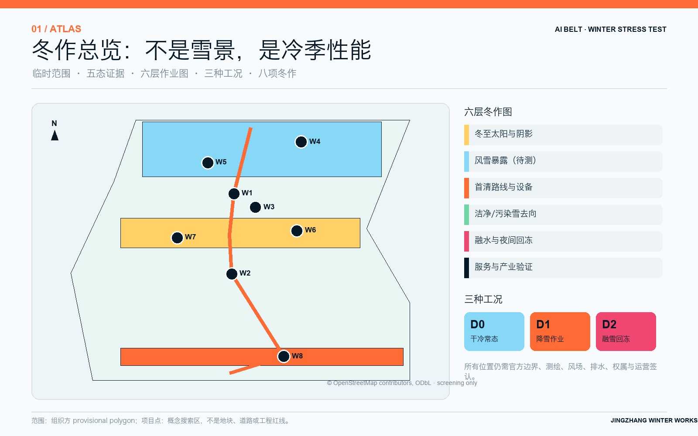
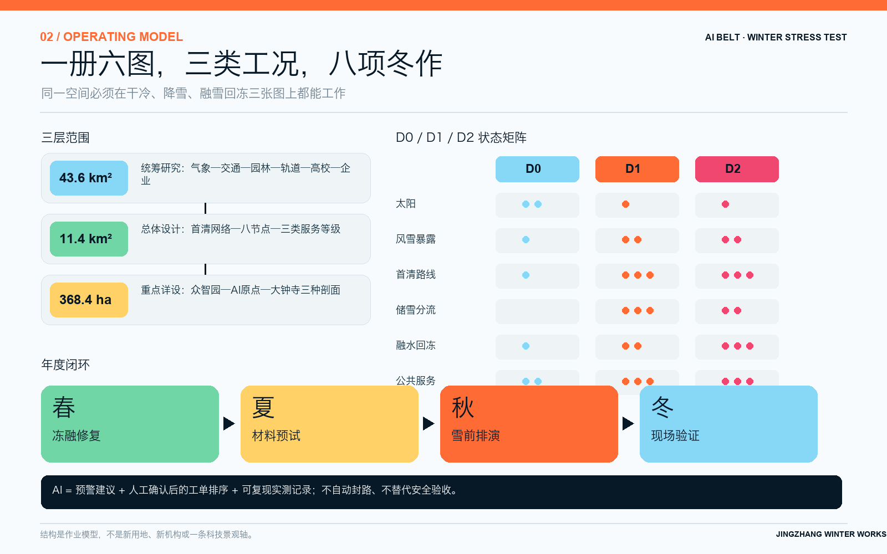
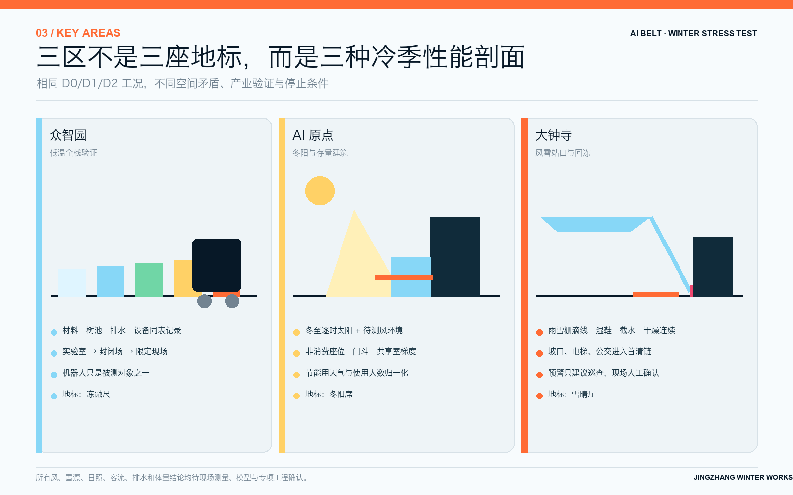
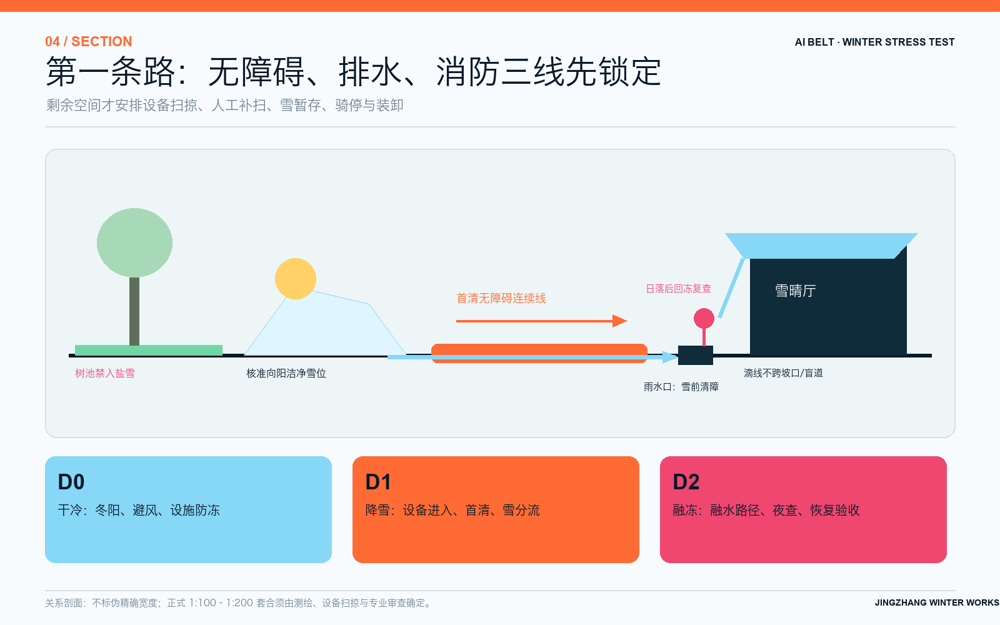
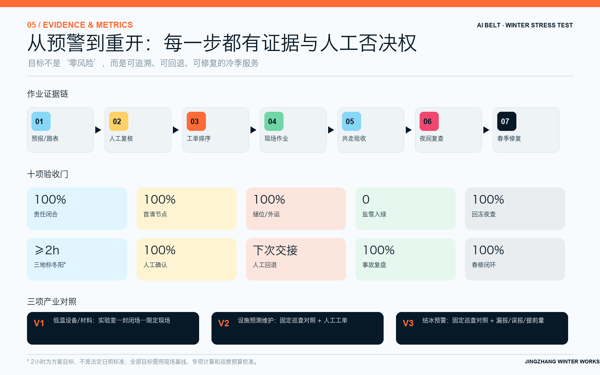

本页面使用组织方 provisional polygon，仅作概念生成与拓扑自检；不是官方红线、法定控规、精确面积或工程批准。
总览地图

三层范围
43.6 km²
统筹研究：产业、气候与城市运行网络。
11.4 km²
总体设计：首清链、雪水路径与八个节点。
368.4 ha
重点详设：三个互补的冷季性能剖面。

重点区域
众智园
低温设备、材料、树池边界与排水构件的全栈共测。
AI 原点
冬阳公共生活、入口门斗与存量建筑能源对照。
大钟寺
风雪站口、湿滑入口、融水夜冻与连续换乘。

交通慢行 · 蓝绿公共空间 · 建筑 · 更新项目

用地分区只是一张满足拓扑自检的概念载体；建筑只画需求包络；道路只画候选联系，不画伪红线。
AI 场景 · 核心指标
site_area_sqm11,412,825
临时边界复算；低置信度。
green_ratio0.43%
冬季绿色搜索区/临时范围。
public_space_ratio1.46%
八个概念项目搜索区/临时范围。

任务覆盖
自检状态
结构、范围、指标、图件与双语伴随文件完成；最终结果以仓库自检脚本为准。
来源
官方公告、现行法规标准、北京气候与扫雪政策、组织方任务书、案例官网和带署名 OSM；完整登记见 sources.json。
假设
官方边界、控规、测绘、风场、雪情、排水、权属、客流、设备与运营预算均待确认；见 assumptions.json。